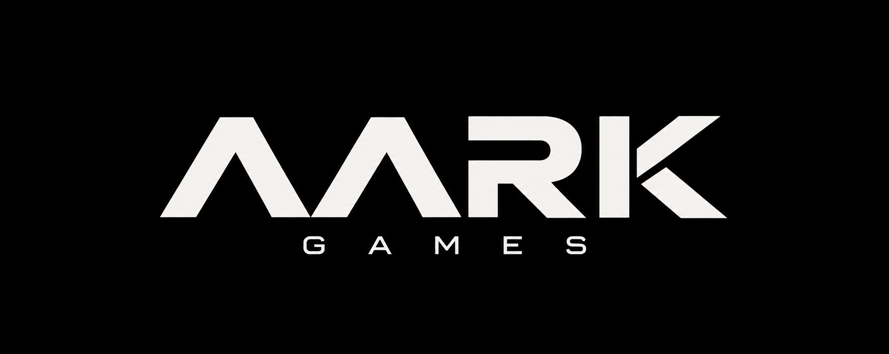
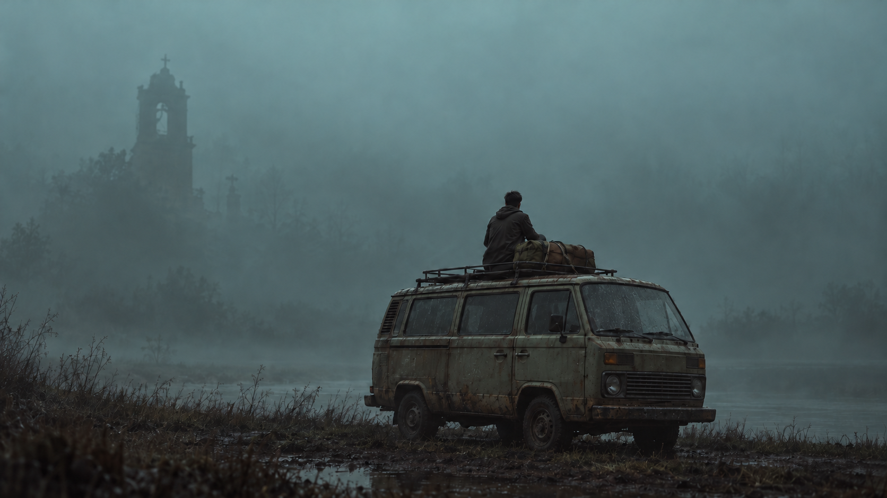

Abhishek Kumar
Creative Director / Project Manager

Explore AARK +
01 / OUR GAME
THE HOLLOW BEYOND
A survival horror game from AARK Games.
“They came to explore.
Someone was waiting.”
02 / THE STUDIO
AARK is built around a simple belief: great games begin with curiosity. The kind that makes us look a little closer, go a little further, and ask what comes next.
We bring that spirit to everything we create. From the first imagined landscape to the smallest detail, we build with intention—and always for the player.
03 / TEAM
Creative Director / Project Manager
Lead Programmers
VFX Artist
Character Artist
04 / INTERNSHIPS
AARK Games welcomes early talent across game programming, art, VFX, character work, environment design, and production support.
Internship details and openings will be announced as production expands.
05 / OUR APPROACH
Places with a past, a pulse, and something waiting just beyond the horizon.
From the weight of a footstep to a distant silhouette. Nothing is too small to make a difference.
Discovery over instruction. Meaningful choices. A sense of wonder that belongs to you.